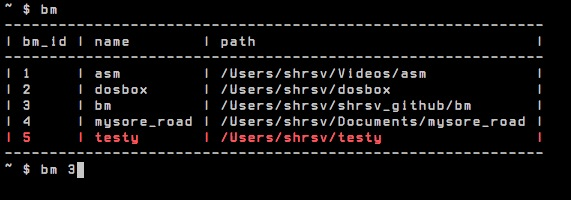

ridiculously simple shell bookmarking
bm is an ultra-simple bookmarking script for the bash shell.

Download or clone this repository. Then:
$ cd bm
$ chmod u+x install.sh
$ ./install.sh # will ask for password
Goto a folder, type:
bm a
Now type:
bm
You should see a table similar to this:
----------------------------------------
| bm_id | name | path |
----------------------------------------
| 1 | Videos | /Users/shrsv/Videos |
----------------------------------------
Now from any folder, you can cd to the Videos directory simply by typing this:
bm 1
That's all there is to it!
The advantage of this id based approach is that it causes minimum cognitive load to the brain. You just have to scan a list of names and pick one from that, whereas in many bookmarking systems you have to remember the name of the bookmark and then type it to cd into it. Even with autocomplete, retrieving things from memory causes more cognitive load compared to a pick & choose approach (in my experience). When working on a complex problem you must focus on the problem and only the problem. Tool or software or filesystem terminology should not come into your working memory, but only the problem terminology should be in your working memory. So: bm asks you no questions, asks you to remember nothing; all it asks you to do is scan a list and make a choice.
bm show a list of all bookmarksbm a add current folder to list of bookmarksbm id cd to folder with id=idbm d id bm_id1, bm_id2, ... delete folder with id=id from bookmark listbm cclear all dead bookmarksbm r renumber all bookmark idsbm f str find string str in all bookmark paths and cd to itbm s (bm_id|name|path|hits|timestamp) sort the bookmarks table by columnbm_util by default installed in /usr/bin but you can install it in any bin folder of your choice. This python script provides functionality.~/.bm_bash contains the shell function bm. This file is sourced in ~/.bashrc by the installation script.~/.bookmarks.db sqlite database that contains all the bookmark entries. You can open using: sqlite3 ~/.bookmarks.db